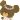
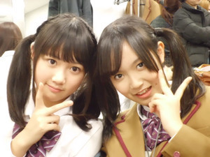

にょーん(ω)ひめたんです♪
今日はひめたんからみなさんに質問っ
ひめたん新幹線で広島から東京まで４時間かかるんぢゃけど、
そのあいだ暇人なんよねー...
だから音楽聴いて過ごしとるんじゃけど、もっといろんな曲を聴きたーい(o>ω<o)
みなさんの好きな曲を教えて下さいっ!
ひめたんの音楽プレーヤーに追加したいなー♪
 得意科目と苦手科目を教えて下さい!
得意科目と苦手科目を教えて下さい!
得意科目は国語・社会(^^)ひめたんは文系人間なんだと思う。
苦手科目は数学・保体・理科('`)
保体は実技ができないから...。
ひめたんが目標とするＡＫＢメンバーを教えて下さい!
好きなのはこじはるさん(小嶋陽菜さん)
尊敬するのはゆきりんさん(柏木由紀さん)
ゆきりんさんはＡＫＢとしてはもちろん、
ユニットでも、個人でも活躍されてるところが憧れます
ドラマ出てみたり、お天気お姉さんとかしてみたり(^^)
ひめたんもゆきりんさんみたいに
マルチに活躍できる人になることが目標です!
※ごめんなさい('・・`)漢字を間違えてたので訂正させてもらいました。
ブログ書くのに何時間かかってるの？
なんだかんだで２時間はかかっちゃうかな∩^ω^∩
楽しいから、記事完成するのあっという間ですよー!
ひめたんは好きなキャラクターって何？
かわいいこなら誰でもうぇるかむ(^^)♪
本命は
ジャッキーちゃん ←
←ジャッキーちゃんは「くまのがっこう」って絵本のキャラクターで
12匹きょうだいの末っ子のおんなのこです
今回、初ビックサイトですか？
ぴんぽーん(ω)
ビックサイトでびゅーしましたよー♪♪
ひめたん来年は漢字一文字で表すとどんな年にしたい?
「努」と書いて「ゆめ」と読むーっ!!!!!
そうそう
「努努鶏」→「ゆめゆめどり」って読むんだってー(^^)

「ゆめ」→「努」に変換されることはないんかもしれんけど
ひめたん語とゆーわけで採用!
またひとつ賢くなりましたー

教えて下さった方に感謝ですっ
中元家にりんごきたー(∀)ー★
毎年この時期におともだちからくるりんごが楽しみっ
さゆりんごちゃんーっ(。・ω・。)/

美味しそうしょー◎
明日りんご使って料理作ろっかな(^^)
りんごの料理といえば、みなさん何かありますかー？
ひめたん
さゆにゃん(井上小百合chan)
とまたん(大和里菜chan)
お誕生日おめでとうっ!
さゆにゃん見るたびにきゅんきゅんするー(*^^*)
さゆにゃんネコちゃんみたいぢゃもんっ
君たち!僕と握手っ!
いやーん握手してくださいー
やまとまとー♪
とまたんは癒しひめたんはパワーもらってます
初期のころから地方組みんなで夜ごはん食べに連れてってもらって感謝!
とまたんの声好ーき
ふたりー
プリキュア可愛かったーあ(o>ω<o)!!!
いつもコメントありがとうございます。
受験生だからクリスマスイベントは出演控えてもいいよーって
言われとったけど、
みなさんからのコメントを見てたら「イベント出たいーっ!!!」って
思いました。
ひめたんにとっても、みなさんにとっても
素敵なクリスマスイベントになればいいなーあ。
何日に登場するかはお楽しみにということで...。
さあコメント返しちゃうよーっ
福岡でお土産買えたの〜？
空港で、あまおうのお菓子買ったー♪
ほんとはいろいろ迷いたかったけど、飛行機に乗り遅れたらやばいーと思って
みなさんに教えていただいたお土産がチェックできんかった...(>_<)
また絶対福岡行くんぢゃけーっ!!!
みなさんへのお土産は何より、元気で幸せなひめたんの姿っ？
...ひめたんあうぇい(∀)
福岡まで１人で心細くなかった？
時間は東京の４分の１だったけどー...
それでも寂しいし心細かったですよっ(>ω<)
スタッフさんと合流したときのひめたんの顔といったらもうねっ中略。
今度福岡に行くときは頑張って遠征しようかな？w
ぜひー
一緒に福岡楽しみましょ。
またキャラバンをするなら次はどこ行きたい？例えば海外とか♪
海外ー(・∀・)ー☆
そりゃいつか乃木坂海外進出したいですね!きらーん
とりあえず今すぐにでも広島へ...
ひめたんの、日本制圧プロジェクトが始まったようですね！
合言葉は、ひめたんの物はひめたんの物、みんなの物もひめたんの物！
こんな感じで、いかがですか？
いわゆるキャッチコピーってやつですね(ω)それだったら...
ひめたんのハートはみんなのもの
みんなのハートはひめたんのもの
(*/ω＼*)ぽ
自己紹介の時に広島アクターズのスター
Pefumeさんのコピーされてましたが
最新アルバム「JPN」はゲットされました…？？
ちぇっく済み(ω)vしゃきーん
あーんな立派なアルバムなんて感動しますよね
広島出身アーティストとしてPefumeさんに続け!続くんだひめたん!
ひめたんは熊本へは行ったことある？
ひめたん熊本行ったことないー('`)
でもひめたんには熊本出身のおともだちがいるんよね
「いつか泊まりに来てねっ」て言ってくれたから行くー
近いうちに、熊本でライブさせて下さーい!
ひめたんはクルマ好き？
ひめたんクルマ好き♪
白とピンクのかわいい軽に乗るって将来設計もちゃーんとあるんぢゃけ★わら
街で声掛けられるようになった？
いやいやそんなことー
まだまだアイドルオーラ発信できるように
自分磨きまくるんじゃけー

身長すずかちゃんと同じくらい？
そうなりますねっ。今どっちが高いんかなぁー(o>ω<o)??
もみじまんじゅうを買うならやはりにしき堂ですか？
お勧めのもみじまんじゅうはありますかぁ？？
にしき堂のも美味しいけどひめたんはお店までこだわらない人かなー。
チョコとかねチーズとかね。
あなたはつぶあん派？こしあん派？
(∀)わら
皆既月食、見ました。
で、写真撮りました！
ひめたんは撮影したかな？
ひめたん見ましたよー♪
んでもすぐバス乗ったけ写真撮れんかったですー
ひめたんのあたまのフィルムに焼き付いてるから現像しましょっ!
それではみなさま、あったかくして寝ましょうね
モコモコのルームウェアをおおすめします。ふふふ
ぐっない(^^)ノ
ひめたん
まめちゃん(伊藤寧々chan)お誕生日おめでとうっ＼(*^^*)／
岐阜弁かわゆす
寧々のこと、応援してくれんといかんよ
...あっとるかなー？自信なっしんぐ。
いつもありがとうこれからも、すまいるまめちゃんでいてね!
絆!!!!!!!
ひめたんは乃木メンのみんなと、スタッフさんと、それからみなさんと、
たーくさんとの出会いを経て、絆を感じた2011年。
来年もステキないちねんになりますように...★
キャラバンの感想聞かせてね
といいことでっ♪
＼ひめたん福岡の旅／
ひめたんひとりで新幹線乗って福岡行きました。
いわゆる現地集合ってやつ(ω)わら
それで福岡でスタッフのみなさんと
みさみさ(衛藤美彩chan)せいたん(畠中清羅chan)ひなちゃん(川後陽菜chan)と合流♪
だるまってラーメン屋さんでお昼食べたんよね
有名人の方の色紙が壁一面ばーってあって、みんなで高山りました(^^)♪
乃木坂もサイン飾ってもらえるように頑張らんとね。
天神ソラリアでのイベントは、共演者のみなさんと九州クイズで勝負したー♪
福岡ソフトバンクホークスのキャラクターのモデルは
柴犬じゃないのでお間違いなくっ。
神戸蘭子さんに、
「私も“ひめたん”みたいなニックネームで呼んでほしいー(^^)」
って言っていただけて感激っ!!!
らんたんっ
めーっちゃ可愛かったです♪♪♪
それから乃木坂ティッシュ配り!
福岡(天神)駅に1時間ほど出現したんです福岡チーム。
このティッシュね、なんと乃木メンの写真が入ってて33種類あります☆
...画像なーい('・・)許してください。
努努鶏。どんなのかな〜?なんて読むのかなー?
ひめたんそれ食べれんかったーあ('・・`)確かに何て読むんか気になるー...
どどとり...。
正解わかる方ー？ひめたんの代わりに教えてくださーい。
福岡から、全員で移動したの?
誰か迷子になっていませんか?特に、ひめたん。
そう思っちゃいますよねー特に、ひめたん。
ちっちっち('ω`)
今回おーるロケバス移動だったけ、バスにちゃーんと乗れば迷子にならんかったよ♪♪
電車移動だったら、今ごろひめたん広島帰ってこれてない...と思う。
ブラックホール乗ってる時に一瞬大仏が光るんだけど見つけられたかな??笑
あー。
入場する直前にバスガイドさんに教えてもらったことあるっ♪
...にもかかわらず
きゃーきゃー叫んで探すの忘れてたーあ(＞＜)
今度福岡行く機会あったら、今度こそ探してみますね☆★
最後に。
また福岡へ来て下さいね
絶対また九州に来てね☆全身全霊で乃木坂を推すけん!!!
ぜーったい行く(o>ω<o)!!
今度は33人全員で、オリジナル曲持って行きます!
そのときは会いにきてくださいねー
がんばるけんっ♪♪
ひめたん
東京モーターショーわずヽ(・∀・)ノ
きのうに引き続きたーくさんの方からパワーもらったひめたんです!
今日は握手して握手して、握手しまくりました!!!
会場がわいわいしてて声が届いたか不安...('・・`)またゆっくりお話したいなー
「ブログ見てますっ」とかきゃーあ(//ω//)
更新がんばらんにゃいけんなって思いました。
のでがんばります。
のでこれからもブログ遊びにきてねーっ(。・ω・。)ノ
ブログにコメントしているファンの名前って覚えてたりしますか＞＜？
それが覚えてるんですよー「うそだー!」って思いますか(ω)？わら
握手会とかあった時に名乗っていただけると、「あー!」ってなります
朝早くから並んで乃木坂46のこと待っててくださって
最後のさいごまで手ふってくださって
感謝っ!
＼(∀)／
♪すってっきっなっにーちーよーおぉび～
「グッグッグッデイ」のサビの歌詞が共感できるなう。
そうそうひめたん最近ね
ハーフアップ以外の髪型しとんじゃーあ。

せいらりん(永島聖羅chan)∞ひめたん
♪つーいんーてーる～
「ポニーテールとシュシュ」のサビを替え歌しながら踊る
今日1日のひめたんのマイブームでーした☆
あ。
今日も会社でファンレター読んでプレゼント受け取りました(`・・)ゞ
ひめたんちっちゃいときからお友達からお手紙もらうの好きだったけ
今日も高山りました★
↑新たな使い方を見出だしたっ!きらーん
それからねー
コメントで教えてくださった人もおったんぢゃけど
ＢＯＭＢさんにお見立てしていただきましたー拍手っ(^^)
よかったらチェックしてみてくださいね♪
ひめたん(*ゝω・*)ノその4に
「いこまっち(生駒里奈chan)にかっこいい表情の作り方を教えてもらった」
って書いたのは、このことだったのー!!!
みんなかっこえーえ...。
見たよーって方はひめたんにアドバイスしてくださいっ★
東京ビッグサイト...
おっきかったーあっ(*/ω＼*)!!!
ひめたん
はいー乃木坂46全国キャラバンin福岡終わりましたっ
天神ソラリアにお越しくださったみなさん 本当にありがとうございましたっ!
晴れ女のひめたんは珍しく活躍できなかった('・・)
寒かったし雨ふったし、なんでー？
それでもたくさんの人が遊びに来てくださってて、ひめたんびっくりしましたー!
1Fのフロアも2Fも3Fも!近いちかい(o>ω<o)
ふくおかー♪
人生３回目の福岡。楽しかった福岡。美味しかった福岡。
残念ながら名所めぐりはできなかったけど、イベント楽しかったからおっけー☆
地元へようこそって歓迎してくださった方、はるばる遠くからおこしくださった方
本当に感謝!乃木坂福岡チームを助けてくれてありがとうございましたっ!!!
...反省点を述べだしたら尽きないので、ひめたんのノートに書いて
心に留めておくことにします('・ω・`)
今日はモーターショー!
行くよーって方、早くみなさんに会いたいな
会場まで気をつけて来てください♪
全員の握手会は久しぶりぢゃねー(^^)
あ
皆既月食見ましたー☆教えてくださってありがとうございました!
メンバーみんなと一緒にテンション高山りました♪
(*/ω＼*)ふふふ
ひめたん
{kind=link}
{kind=link}
{kind=link}